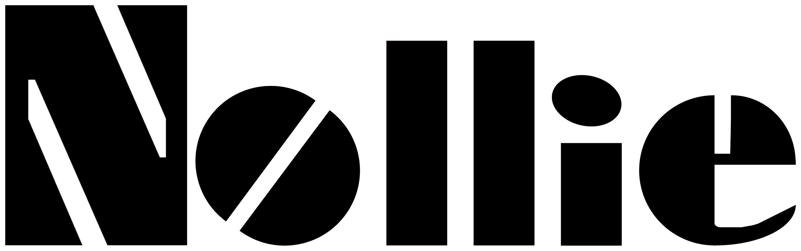

Nollie Skateboards nació en 2000 gracias a dos hermanos, El Burro y Beto. Desde el principio, su objetivo fue ofrecer tablas de skate de la mejor calidad, diseñadas por skaters para skaters.
En 2025 relanzaron la marca, mejorando cada detalle para que sus productos fueran más resistentes, cómodos y funcionales para quienes disfrutan del skate en la calle.
Los hermanos buscan mantener siempre la esencia del skate callejero, creando productos confiables y duraderos, pensados en la comunidad que vive el skate día a día.
